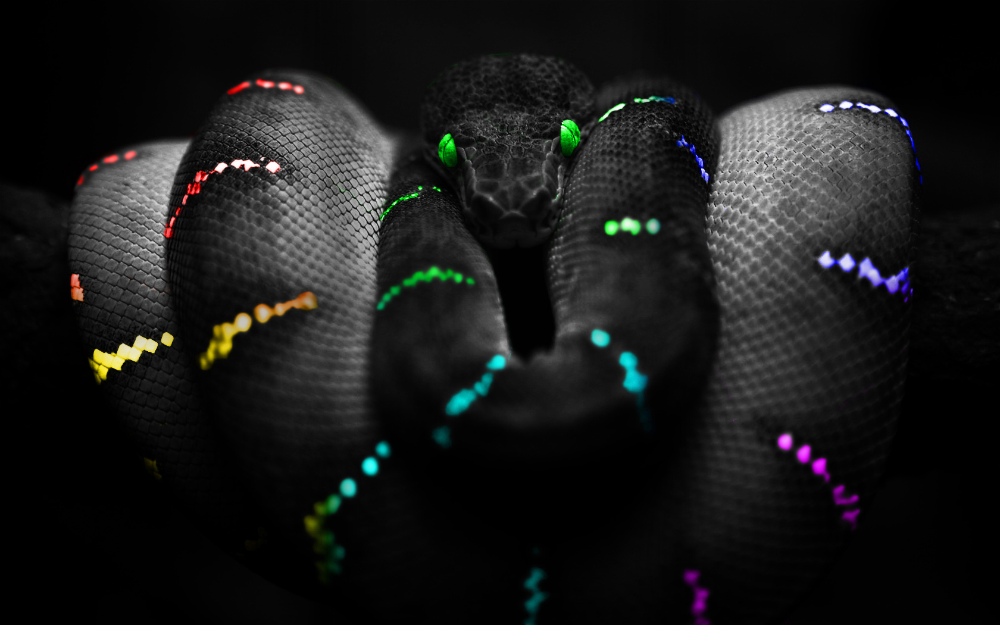
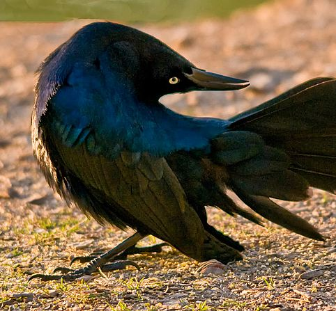

Sherry Xu
Artist, Musician, Programmer, Biologist, Athlete

About
Sherry is a fourth year student at the University of California, Berkeley.
She is currently working towards a double major in Computer Science and Integrative Biology (Human Biology).
Sherry's current interests include application design, UI/UX & web design, networking, computational biology, making beautiful data charts, machine learning, and speaking in third person on this web page. She is a full stack developer with a slight preference for front end.
Involvement
During her time at Cal, Sherry's been involved in a few activities
Sherry is part of the Organizing team for CalHacks 2014
-
She's in charge of internal and external relations on for first ever Northern California megahackathon, CalHacks 2014, maintains coordination between CalHacks staff, campus student organizations, companies, and EECS Staff and faculty.
Sherry worked as an EMT in Bear Medicorps (Formerly BEAR Emergency Medical Services), the official EMS service on U.C. Berkeley campus
Fully licensed for CPR and the California EMT-B/I Training
Has many hours of experience running 12 hour shifts in San Francisco with King American Ambulance Co.
Worked as a peer health and sexual health counselor at Berkeley
DNA Sequencing and Protein research
-
Working on protein research, tasks around the lab include tagging proteins, purifying proteins, chromotography, and creating mutifunctional protien modifications
Sherry was part of the executive board of the Computer Science Undergraduate Organization (CSUA)
Served as the CSUA
executive board secretary and treasurer from May 2013 - Dec 2013, and as Events Manager from Jan 2014 - May 2014. She now serves as industrial relations.
Took care of the clubs finances and internal affairs of the CSUA. Helped plan and execute dozens of events, including two big hackathons each year, multiple information sessions, club general meetings, social events, coding parties, and more.
Hacked on projects with other CSUA members, helped build and fix computers, and learned how to hack and play around with some other cool gadgets like the raspberry pi, arduino, and Galileo board(Intel).
Projects
Here's some of the projects that Sherry made, more to come as she finishes migrating some of the ones on expired domains:
Android + Qualcomm TOQ smartwatch project
App building planning doc - Designing an app from scratch
Android Learning Project - Simple converter app
Education
Some of the cooler classes Sherry took in Berkeley Include:
CS61A, Structure and Interpretation of Comp. Programs
CS188, Artificial Intelligence
CS168, Networking
CS160, UI/UX Design
CS170, Algorithms
IB131, Human Anatomy
IB167, From Fossils to Genes
IB118, Pathogens
Programming Languages and Tools
Languages
Java
Python
C
C++
Web Design
HTML 5
CSS
JQuery
Javascript
App Tools
Android Studio (Java + XML)
XCode/iOS
Other Tools
Git
Some other APIs
Recreational Activities
Between projects, clubwork, and hacking, Sherry occasionally has some free time to herself. Here are some of the things that she does :
Art, Design, and Animation
Art and Design! Sherry draws a lot in her free time, She does quite a bit of rendering and 3-D art in maya in addition to traditional art. However, she has been moving away from that going into digital and tablet drawing. She is currently learning how to photoshop better.
Hiking
Sherry's been hiking all over the world, from the Grand Canyon to the Great Wall of China to the lovely woods in Banff, BC and the mountains of Alasaka, there's no
mountain high or low enough!
Exploring
Sherry loves exploring and traveling whether it be local to see some street art, check out a delicious restaurant, or visit places around the world! A favorite pastime of mine is Urbaneering, in which
one looks at abandoned structures and pieces together a story from what was left beind. Sherry also goes geocaching when the mood takes her.
Swimming
Sherry loves swimming, she's been swimming since she was in middle school, moving on to join her high school team, Swimming in the Division One League and placed in League finals for all of her years. She also did the Sharkfest San Francisco swim from Alcatraz back to SF Bay.
Music
Music! Sherry's piano has been her trusty partner for 15 years of her life, however she couldn't bring her favorite instrument with her to Univeristy, so she's been learning guitar instead!
Contact Me!
Interested in learning more about Sherry? Send her an email, connect with her, and check out her blog!